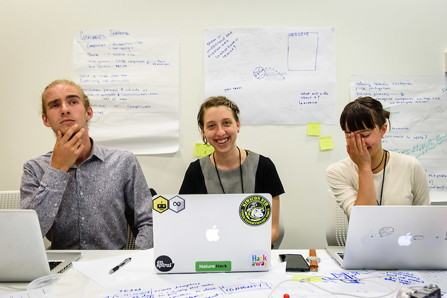

The Team
Business need to easily hire talent. Let's make that happen.


We’ve talked to small companies, large companies, immigration workers and directors - this is a summary of those conversations. We need more of these, plus a ton of research. Here is where we're at.
Let's make a shit-sandwich
Shit-sandwich | noun | [ /ʃɪt/ /ˈsan(d)wɪdʒ/ ] 1. A method of making an unpleasant thing more palatable by surrounding it with more pleasant things.
What's Awesome
Our tech sector is booming. The combined revenue of the computer system design sector increased by $1.1 billion in the period 2009–2013, to reach $6 billion annually. New Zealand has the main attributes to become a version of Silicon Valley. But, there is a huge skill shortage; tech businesses need a way to access international quantity talent.
-
Enter the employer accreditation scheme!
Accredited employers can hand out talent visas. It’s an easy way for employers to choose and get the talent they need. Talent visa holders are fast tracked into getting residency, so they can stay and contribute in the long term. Immigration are saved much of the lengthy process of screening applicants, as the government trusts businesses to choose great people.
-
The assessment by the immigration team
Steffan, from the business migration branch of immigration, gave us insight into the process. Immigration takes an incredibly holistic approach when analyzing a business. For example, even if a business is running at a loss, or the founders have been bankrupted, that business can still be considered "financially sound”. They painstakingly analyze each and every case. This lets the outliers pass!
For example: Brand new Tech company HISTQRY run by 18 year old Chris Smith, had no HR or trading history, but passed the “financially sound” requirement due to the promise of an angel investor.
My tech business is flourishing. I love my employees and want to keep them around.
What Could be More Awesome
I'm starting a business, I don't have time to even think about filling out this 20 page paper application.
-
Education
Some companies don’t even know an accreditation scheme exists! Many businesses are unaware that accreditation could be a better solution for their employees, who otherwise, would struggle through the migrant visa process.
Steffan, from immigration, felt that businesses are often unaware of the wiggle room encompassed by “financially sound”, and that people avoid applying because they don’t want to share that they are running at a loss. Another pain-point is in the process itself - there are no examples of what an application should look like, which leads to general confusion and incomplete applications.
-
Data management
Right now, there are 48 employees in this process, and only 530 accredited companies. That’s a 1 : 10 ratio of worker per company! The system is already strained; it’s definitely not scalable to the thousands of companies that are eligible for this process. Immigration employees spends 6 + hours a day pouring over financial documents. This intense human power is not sustainable and can be better channeled into education.
What's Awesome
-
The tech sector has the most to gain
Figuring out a better way for the accredited employer process to function will fill that massive skills gap the tech sector faces. Tech workers often can’t go through normal visa avenues. In our industry experience, a common problem is that workers are highly skilled, but low in qualifications. You can be the best coder in the WORLD, and be entirely self taught - not something that skilled migrant visas take into account.
We care about our industry. The tech sector would benefit massively from these problems being solved. We are driven by a vision for NZ to have a competitive edge and realize it’s full potential as a tech giant.
I love living in NZ, and contributing to the growth of the tech community. I want to call NZ my home.
Take the survey
About Team Street Cred
On a collective 6 hours of sleep, we won “Most innovative use of Landcare Research data” with the app we built at NatureHack, a 24 hour hackathon. Only a solid team can survive that amount of sleep deprivation and still be friends. We carried that great dynamic into the r9 rev up; where we dived into problem 7, soaking up knowledge. Together, we built a website and produced a classy pitch.
Gabrielle comes from a law background, but jumped ship into tech consulting after discovering her passion for programming. She’s builds apps for small and large companies, in agile environments. She loves teaching and is currently working on redesigning the curriculum for the programming bootcamp, Enspiral Dev Academy.
Connor is the kind of person that hates answering the question “what do you do?” From organising large scale festivals, to starting council tree planting initiatives, eight years of event management has given him a diverse skillset and breadth of experience in leadership. He is fantastic at working with teams in high-stress environments, he made good use of these skills when he participated in the Inspiring Stories Trust lean startup accelerator.
Ashlyn hails from Austin, Texas, where she graduated with a degree in Geosystems Engineering and Hydrogeology from the number one nationally ranked department in its field. Determined to learn web development and travel the world, she set up a business providing templated web sites for yoga teachers. Two years later, she landed in Wellington, where she now crafts web apps alongside government agencies at Datacom.
We’re great at communicating directly and honestly with each other, both in reigning in each others’ overly outrageous ideas, or culling them completely. We can talk with each other and talk to computers. Between the three of us, we’ve struck a fantastic dynamic.